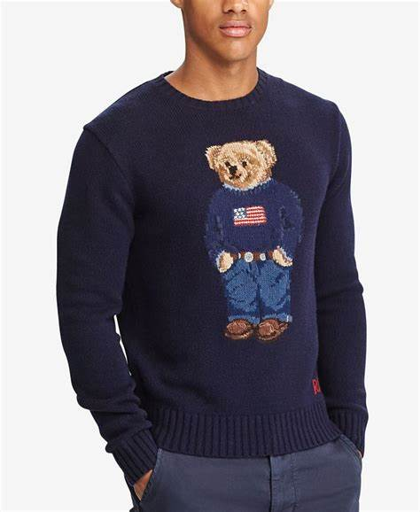
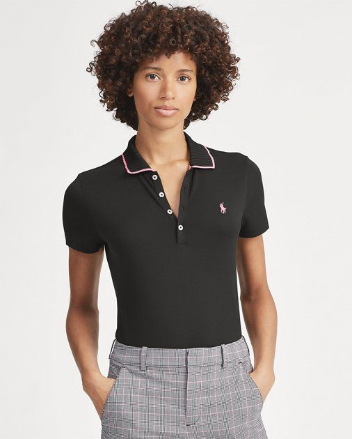
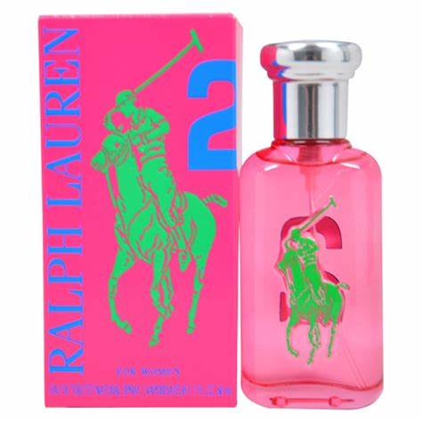

Ralph Lauren (rođen 14. listopada 1939., New York, New York, SAD) američki je modni dizajner koji je, razvijajući svoj brend oko slike elitnog američkog načina života, izgradio jedno od najuspješnijih modnih carstava na svijetu. Lifshitz je odrastao u Bronxu, u New Yorku. On i njegov brat promijenili su prezime u Lauren kada su bili tinejdžeri. Nakon srednje škole, pohađao je poslovne tečajeve u večernjoj školi i danju radio u prodaji. Dok je radio za tvrtku koja je proizvodila kravate, dobio je inspiraciju za dizajniranje vlastitih kravata, te je 1967. godine započeo vlastiti posao, prodajući svoju jedinstvenu liniju kravata pod imenom Polo. Od samog početka njegovog brenda, Laurenove kreacije karakterizirala je stilizirana elegancija koja je prizivala izgled engleske aristokracije prilagođen sportskoj američkoj eliti s istočne obale. Njegova prva linija muške odjeće iz 1968. godine sadržavala je klasična odijela od tvida, a njegova prva ženska linija iz 1971. godine nastavila je istraživati klasično krojenje i dobar ukus, ali s ženskim zaokretom. Godine 1972. Lauren je predstavio ono što će postati njegov prepoznatljiv komad: mrežastu sportsku košulju, dostupnu u raznim bojama i s njegovim zaštitnim znakom - amblemom najaristokratskijeg sportaša, igrača pola.
  